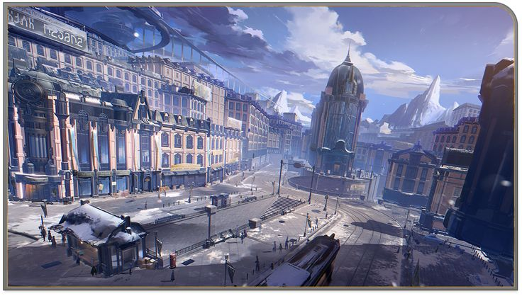
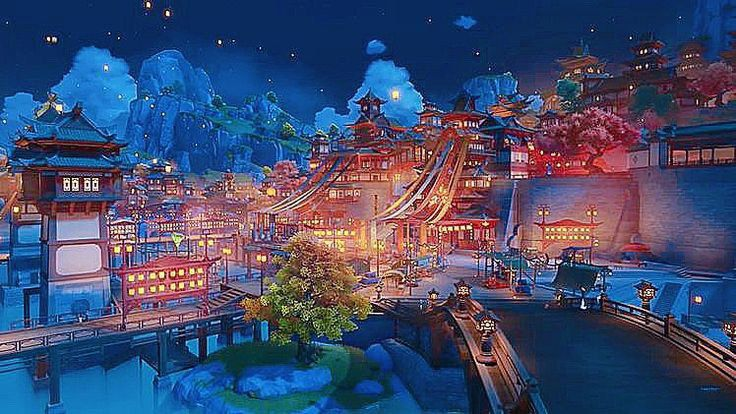
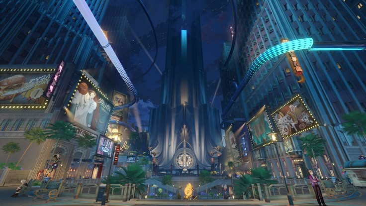
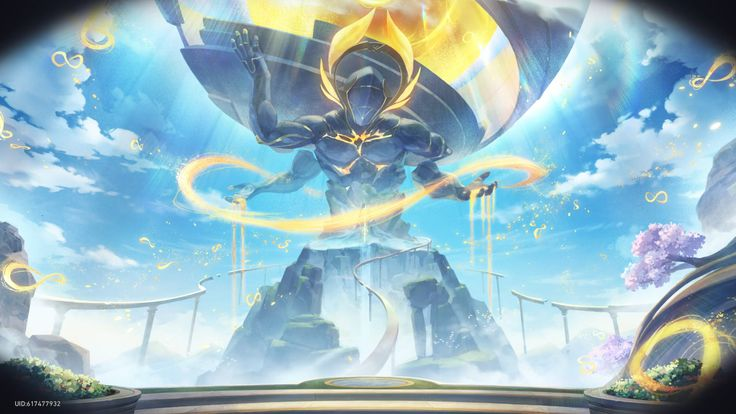

Jarilo-VI
A frozen world where the people of Belobog struggle to survive beneath an endless winter.
Every destination has a story to tell
The Astral Express visits many different places. Each world has its own environment, culture, conflicts, and mysteries.

A frozen world where the people of Belobog struggle to survive beneath an endless winter.

A vast ship with a long history, advanced technology, and a distinctive culture.

A place known for its dreamlike atmosphere, grand attractions, and hidden secrets.

A mysterious world filled with legends, powerful figures, and a story shaped by fate.